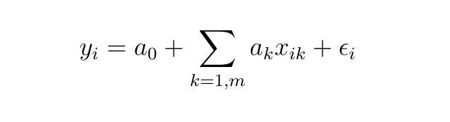
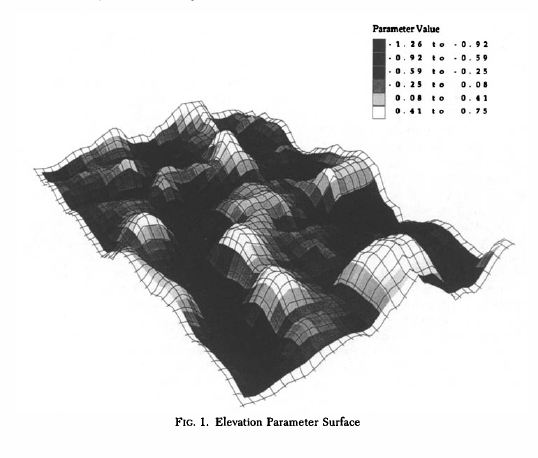
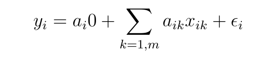
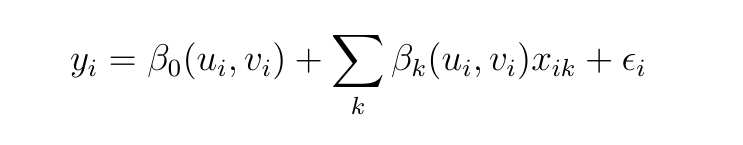
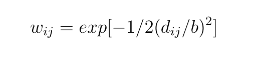
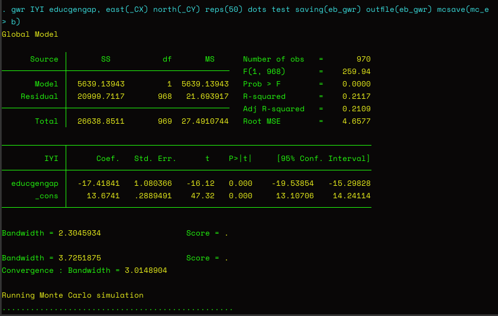
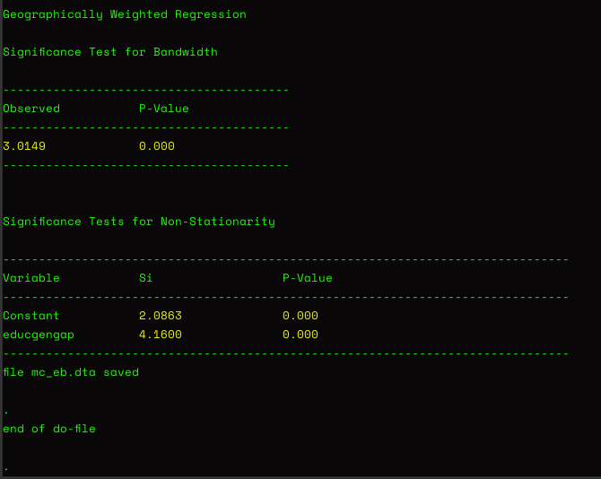
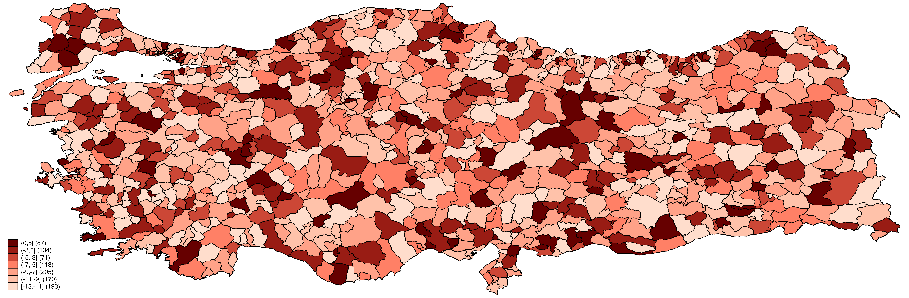

Geographically-Weighted Regression (with Stata)
Despite the potential gains in interpretation from Geographically-Weighted Regression, this method is rarely used by political scientists. The theory behind the method and the application and interpretation with Stata are straightforward. It is also a valuable tool for exploratory analysis as part of spatial work.
We now know that the answer to Sir Francis Galton’s problem1 lies in spatial autocorrelation occurring through two main processes: There might be a spillover in outcomes or there might be clustering on attributes2. We also know that we can utilize global and local measures of spatial autocorrelation to test for dependence in the data as a whole and determining the particular units which are correlated with their neighbors. However, the dependence shown by these measures may not be reflecting true spatial dependence, but another type of spatial effect called spatial heterogeneity3.
The importance of spatial heterogeneity stems from a fundamental shift in how we approach modeling: When we determine the presence of univariate spatial dependence, we run a nonspatial model with covariates to see if the spatial dependence is accounted for. If it is not, we use a spatial model based on the results of robust Lagrange multiplier tests. However, if this dependence is instead spatial heterogeneity, that is it stems from a heterogeneity in the effects of substantive covariates4, then we do not need to estimate a spatial model, but instead estimate a geographically weighted regression (GWR from this point on).
Before we proceed further, we need to define spatial heterogeneity as it is central to GWR. Darmofal (2015)5 explains the intuition behind how spatial heterogeneity in parameters can cause univariate spatial autocorrelation: If a covariate differs in its effects across units of analysis and if the effects are similar in neighboring units, this may generate similar values on the dependent variable. For instance, Darmofal (2015) gives the example of an analysis that gives positive local spatial autocorrelation in violent crime rates. This might be generated by the substantive covariates (unemployment rate, educational attainment level) having stronger relationship to crime in neighboring locations and weaker relationship in other locations.6 In a sense, this is similar to nonstationarity. Because of the fluctuation in the relationship between the dependent variable and covariates over space, the spatial heterogeneity can be thought of as “relationship nonstationarity”.7
The heterogeneity can be modeled in a number of ways based on whether it is discrete or continuous. For the former case, there are spatial random coefficients and spatial switching regressions models. For the latter case, there are spatially varying coefficients models like spatial expansion models and GWR.8
GWR was first proposed in 1996.9 The authors develop GWR as a way of coping with spatial nonstationarity. They argue that when a global model can not explain the relationships between variables, the model has to be modified to take into account the variations across the space of study. The intuition behind this need is straightforward: The parameter estimates we get from a spatial analysis may not necessarily be constant across space.10 Spatially-varying parameters are important to capture because they may either point to nonstationarity or misspecification of the model.
Based on their previous study on possible geographical variations11 in estimates and the fact that sometimes this variation can be complex enough to invalidate “simple trend-fitting exercises”12, they use the original notation for their exposition of a simple linear regression:

where xik is the i th observation of the k th independent variable and we have the i.i.d. error term. The estimates from a model as in the above equation are assumed to be universal. An example of the relationship between population density and elevation in part of Northeast Scotland is provided in Figure 1.13 GWR is introduced as a formal way to handle this type of complex spatial variations in parameter estimates.

GWR is a technique that extends the traditional regression of the first equation by allowing local rates of variation and having coefficients that are not global but specific to a location:14

In the above (second) equation, aik is the values of the k th parameter at location i.
Based on the model developed in previous studies15, the GWR model was specified more recently by Darmofal (2015):

To reiterate the main intuition behind GWR, an OLS as in the first equation gives equal weight to the parameters. In a GWR, proximity to unit i is used to weight the effect of observations on the varying parameters.16 In the third equation, ui, vi are the coordinates of the i th point in space and we have a value of the function. Then parameter estimates are sampled at particular locations and a common choice is the x,y centroids of the areal objects.17
Locations near unit i are given a greater weight in influencing the parameter through a spatial weights matrix. Specifying wij (weighting function) as a function of dij (distance between i and j) will protect against sudden changes that might happen when a particular sample point enters and exits estimation.18 Normally, a Gaussian function is used taking the form:

where b is the bandwidth reflecting the distance-decay of the weighting function. Work on further development of GWR continues with issues regarding whether relationships between the outcome and predictor variables operate at the same spatial scale19 and whether GWR is susceptible to the effects of multicollinearity between explanatory variables.20 There have also been suggestions of a test on how to identify different predictor variables based on whether their effect on outcome is global or local.21
GWR in Applied Research
A library database search shows that even though geographically weighted regression technique is extensively used, there is relatively low utilization for political science problems. The following is a representative survey of the questions political scientists have tackled using this technique.
Darmofal (2006)22 compares two prevalent theories (political account and cultural thesis) on turnout in the United States. He examines the political geography by using a LISA statistic and exposes the spatial structuring of macro turnout. He determines regions of high and low turnout and argues that the analysis points to the need to look at local political factors that produced these clusters.
Cahill (2007)23 study spatial patterns of both crime and its covariates in Portland, Oregon by contrasting results from a global ordinary least squares model and a GWR model. They find several structural measures that have a relationship with crime and show significant local variation. They point to the utility of GWR as an exploratory framework and argue that from a policy standpoint, this framework can be used to test the success of interventions.
Darmofal (2008)24 employs GWR to study the political geography during one of the main electoral alignments (1928–1936 Democratic realignment). He demonstrates that contrary to the common conceptions of this realignment, the increasing support for the Democrats was not limited to urban areas but they enjoyed increases in largely rural Western locations. GWR helped show that the great variation in change in voter support at the local and subnational level was affected by subnational variation in political and demographic factors.
Cho (2010)25 study volunteering and donating to a major statewide election campaign. They find that these sorts of political participation are related to the socioeconomic characteristics of the precincts where citizens live, but they are spatially nonstationary. By using GWR, they are able to show the heterogeneity of contextual processes that generate the uneven flow of volunteers and donors into a political campaign.
Brass (2020)26 study public good provision in the African context of Ghana. Considering the conflict between national-level civil servants and local bureaucrats, they uncover that the distribution of solar panels also included places with inconsistent voter turnout. The provision of solar panels to these localities was to probably motivate voter turnout. The authors find that although such relationships were seen across the subnational space, their effects varied and were strongest in districts adjacent to Lake Volta. This disaggregation through GWR helped authors contribute to theories of distributive politics and voting behavior.
Software for GWR
The function gwr was published in the Stata Technical Bulletin in 1998 to enable GWR analysis with Stata. Since then, there has not been improvement of the function and there has not been significant utilization by Stata users. The implementation follows the logic developed by Brunsdon (1996) and calculates global model together with GWR and provides a way of testing for spatial nonstationarity using Monte Carlo simulation built into the function.
The basic syntax is:
gwr depvar [varlist] [if exp] [in range], east(varname) north(varname) [options]
gwrgrid depvar [varlist] [if exp] [in range], east(varname) north(varname) square(#) [options]gwr fits regressions at each point at which there is an observation.
gwrgrid puts a grid over the observed data, and fits regressions at each centroid of each grid square.
As usual, with the following command, we can see all the syntax options available to the function:
help gwrThe author of the command (Mark S. Pearce) has further information on his website.
There are options to set the iterations for calibrating the bandwidth, to test the significance of the bandwidth (checking whether the gwr model fits the data better than a global model), to save the results if they are to be mapped and the number of Monte Carlo simulations to be performed, among others.
The Case for GWR
The realization that virtually all social science data has spatial dependence was an important motivation on subsequent work on methodological developments and expanding applications using spatial econometrics. The discussion on GWR shows that when we move from non-spatial analysis to spatial analysis, we might be losing important nuance in the variation of the effects of covariates. These take the form of spatial clusters and point to spatial nonstationarity. When we estimate a spatial model assuming spatial stationarity, we will be missing local variation and how covariates differ in their effects in generating these effects. Usually, these insights will provide theoretical advances through a deeper explanation of the variation in the outcome including how it happens.
Cho (2010) states the importance of GWR more forcefully: “Since spatial nonstationarity may well be a rule rather than an exception in the study of many political phenomena, social scientific analyses should be mindful that relationships may vary by location.” Darmofal (2015) also has a similar recommendation: “It is important to examine the possibility of such spatial heterogeneity rather than assuming that global parameters accurately reflect effects across the observed data.” Brass (2020) points to “the need for subnational disaggregation across space.”
Overall, I think we have a strong case for the value of GWR as an exploratory tool. As we need geo-referenced data to estimate a GWR model, it might be a best practice to use GWR to see if we need to estimate a spatial model to account for any spatial dependence. As the inferences will be different when we estimate a global model when we do not need one, political science researchers should make effective use of GWR as an exploratory tool. The insights might generate new theoretical advances and ultimately new research agendas to increase our understanding of political phenomena.
An Applied Example (with Stata)
For this analysis, we will use the same files as in Practical Introduction to Mapping with Stata. These data are from my published article, where I used Spatial Error Models to analyze the vote shares of IYI and HDP in the 2018 Turkish parliamentary election. There might be spatial heterogeneity in the effects of some substantive covariates that can enable improvements in theory and analysis. Now that our dataset is ready with the coordinates of units of analysis in place (973 districts), we can proceed with an exploratory GWR analysis.27
Here is the Stata command for the main analysis we will discuss:
gwr IYI educgengap, east(_CX) north(_CY) reps(50) dots test saving(eb_gwr) ///
outfile(eb_gwr) mcsave(mc_eb)In the syntax above, we have one independent variable (theoretically the most significant covariate — educgengap, educational gender gap), we set the coordinates of the units of analysis (here the 973 districts in Turkey), we specify the number of Monte Carlo simulations to be performed using the reps option (setting it to 50 for computational efficiency). Dots option shows the progression of Monte Carlo simulation by printing dots, test option is used for testing the significance of the bandwidth. Saving option specifies the name of the file (Stata file) that contains the parameter estimates and grid reference for each point where the regression is carried out. Outfile option creates a textfile with .raw extension that contains the parameter estimates for each point at which gwr is calculated. mcsave option is used to save the results of the Monte Carlo simulation as a Stata file.
We will see the following output in Stata when the Monte Carlo simulation is running:

The significance test output looks like:

The author of the command (Mark Pearce) states that this command is designed to test two hypotheses: 1. “Does GWR model describe the data significantly better than a global model?” 2. “Does the set of parameter estimates exhibit significant spatial variation? This compares the standard deviations of the observed parameter estimates with those from the Monte Carlo simulation.”
The interpretation of the results of this exploratory analysis are as follows:
- The global model shows (as expected) that educational gender gap has a significant negative relationship with IYI Party vote share. The test of the bandwidth suggests that GWR is a significantly better model for this data than global linear regression.
- The significance test for nonstationarity of the parameter estimate shows that the relationship between IYI Party vote share and educational gender gap varies significantly over the entire study area.
We can then map the estimates in the eb_gwr.dta output file which can suggest further influences in spatial nonstationarity. This will potentially open up further areas for investigation and help develop theories.
We use the usual Stata code to merge the parameter estimates to the spatial dataset to map them:
use "eb_gwr", clear
rename educgengap parest
gen id = _n
save "eb_gwr", replace
use "spatial_abus_incongruity_dataset", clear
merge 1:1 id using "eb_gwr.dta"
drop _merge
save "spatial_abus_incongruity_dataset", replaceNow that we merged the parameter estimates from GWR to our spatial dataset, we can map them:
grmap parest, fcolor(Reds2) clmethod(custom) clnumber(10) clbreaks(-13 -11 -9 -7 -5 -3 0 5) legcountHere is the result:

What does this mean? We clearly have some locations where the relationship between educational gender gap and IYI vote share is stronger. The distribution of these locations can suggest further avenues of inquiry to determine the reasons. It also informs theory building practice. I think this is a good illustration of GWR as an exploratory tool.
Thanks for reading!28
Footnotes
Tylor, Edward B. 1888. “On a Method of Investigating the Development of Institutions; Applied to Laws of Marriage and Descent.” The Journal of the Anthropological Institute of Great Britain and Ireland 18: 245–272. Galton’s original problem and comment can be seen on p.270.↩︎
Ward, Michael D. and Kristian Skrede Gleditsch. 2018. Spatial Regression Models. Vol.155 Sage Publications.↩︎
Darmofal, David. 2015. Spatial Analysis for the Social Sciences. Cambridge University Press, p.43.↩︎
Darmofal 2015, p.63.↩︎
Darmofal 2015, p.119.↩︎
Darmofal 2015, p.63.↩︎
Harris, Paul, A. S. Fotheringham, R. Crespo and Martin Charlton. 2010. “The Use of Geographically Weighted Regression for Spatial Prediction: An Evaluation of Models Using Simulated Data Sets.” Mathematical Geosciences 42(6): 657–680, p.658.↩︎
Darmofal 2015, p.119.↩︎
Brunsdon, Chris, A. Stewart Fotheringham and Martin E. Charlton. 1996. “Geographically Weighted Regression: A Method for Exploring Spatial Nonstationarity.” Geographical Analysis 28(4): 281–298.↩︎
Brunsdon, Fotheringham and Charlton 1996, p.281.↩︎
Fotheringham, A. Stewart, Martin Charlton and Chris Brunsdon. 1996. “The Geography of Parameter Space: An Investigation of Spatial Non-Stationarity.” International Journal of Geographical Information Systems 10(5): 605–627.↩︎
Brunsdon, Fotheringham and Charlton 1996.↩︎
Fotheringham, Charlton and Brunsdon 1996, p.611.↩︎
Brunsdon, Fotheringham and Charlton 1996, p.284.↩︎
Brunsdon, Fotheringham and Charlton 1996. Also: Fotheringham, A. Stewart, Martin E. Charlton and Chris Brunsdon. 1998. “Geographically Weighted Regression: A Natural Evolution of the Expansion Method for Spatial Data Analysis.” Environment and Planning 30(11): 1905–1927.↩︎
Darmofal 2015, 131. Fotheringham, Charlton and Brunsdon 1998, p.1908.↩︎
Darmofal 2015, 132.↩︎
Brunsdon, Fotheringham and Charlton 1996, p.286.↩︎
Comber, Alexis, Christopher Brunsdon, Martin Charlton, Huanpeng Dong, Richard Harris, Binbin Lu, Yihe Lu, Daisuke Murakami, Tomoki Nakaya, Yunqiang Wang. 2022. “A Route Map for Successful Applications of Geographically Weighted Regression.”↩︎
Fotheringham, A. Stewart and Taylor M. Oshan. 2006. “Geographically Weighted Regression and Multicollinearity: Dispelling the Myth.” Journal of Geographical Systems 18(4): 303–329.↩︎
Mei, Chang-Lin, Shu-Yuan He and Kai-Tai Fang. 2004. “A Note on the Mixed Geographically Weighted Regression Model.” Journal of Regional Science 44(1): 143–157.↩︎
Darmofal, David. 2006. “The Political Geography of Macro-Level Turnout in American Political Development.” Political Geography 25(2):123–150.↩︎
Cahill, Meagan and Gordon Mulligan. 2007. “Using Geographically Weighted Regression to Explore Local Crime Patterns.” Social Science Computer Review 25(2):174–193.↩︎
Darmofal, David. 2008. “The Political Geography of the New Deal Realignment.” American Politics Research 36(6):934–961.↩︎
Cho, Wendy K. Tam and James G. Gimpel. 2010. “Rough Terrain: Spatial Variation in Campaign Contributing and Volunteerism.” American Journal of Political Science 54(1):74–89.↩︎
Brass, Jennifer N., Justin Schon, Elizabeth Baldwin and Lauren M. MacLean. 2020. “Spatial Analysis of Bureaucrats’ Attempts to Resist Political Capture in a Developing Democracy: The Distribution of Solar Panels in Ghana.” Political Geography 76.↩︎
The reader is reminded that we will use the dataset we created in my post on Practical Mapping with Stata.↩︎
The analysis and screenshots were done on a Lenovo ThinkPad E570 running Ubuntu 22.04.2 LTS and GNOME 42.5. Stata IC 16.1 was used in the analysis.↩︎